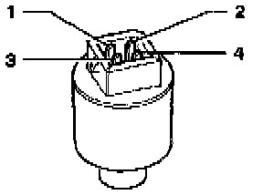

Low Pressure Sensor / Switch: Testing and Inspection

Red O-ring (10.8 mm x 1.8 mm) must fit properly in groove.
Functions:
Switches A/C clutch -N25- OFF if system pressure is too low (low refrigerant charge). Switching occurs between terminals 1 (T4a/1) and 2 (T4a/2).
- Switch opens (compressor OFF): below 1.2 bar (17.4 psi)
- Switch closes (compressor ON): above 2.4 bar (34.8 psi)
Switches A/C clutch -N25- OFF if system pressure is too high.
Switching occurs between terminals 1 (T4a/1) and 2 (T4a/2).
- Switch opens (compressor OFF): above 32.0 bar (464 psi)
- Switch closes (compressor ON): below 24.0 bar (348 psi)
Switches coolant fan -V7- to second speed when A/C System
pressure increases. Switching occurs between terminals 3 (T4a/3) and 4 (T4a/4).
- Switch closes (2nd speed ON): above 16.0 bar (232 psi)
- Switch opens (2nd speed OFF): below 12.5 bar (181.3 psi
- Switch identified with a green label or marked "R-134a"
- To remove, unscrew switch from Schrader valve
- Tightening torque: 8 Nm (71 in lb)
Checking:
If A/C clutch -N25- does not engage with A/C ON:
- Start engine.
- Using a jumper wire, briefly bridge terminal 1 (T4a/1) and terminal 2 (T4a/2) of A/C pressure switch connector.
If A/C clutch -N25- now engages, refrigerant system is discharged (empty).
- Check A/C system for leaks, repair as necessary.
NOTE: With A/C pressure switch -F129- removed and connector attached, A/C clutch -N25- should not engage and A/C should not cool.